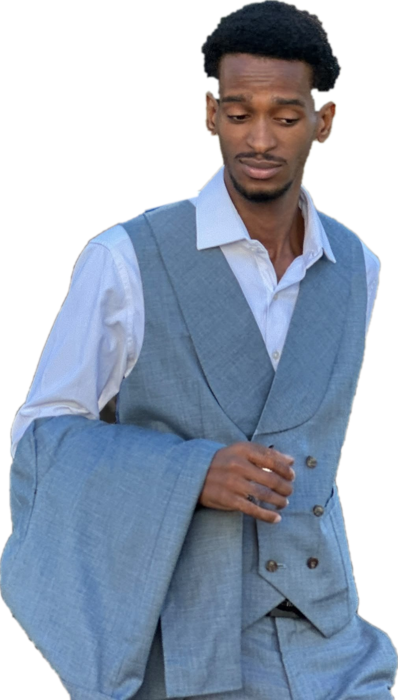

MoheliGoTRAVERSÉES MARITIMES
PARTENARIAT · YOUNG LEADER MOHÉLI
ON A DE QUOIÊTRE FIERS.
Mohéli forme des jeunes qui font avancer l’île.
MoheliGo est partenaire de Young Leader Mohéli.
RÉSERVE TA TRAVERSÉE
TRAVERSÉES MARITIMES DES COMORESmoheligo.com